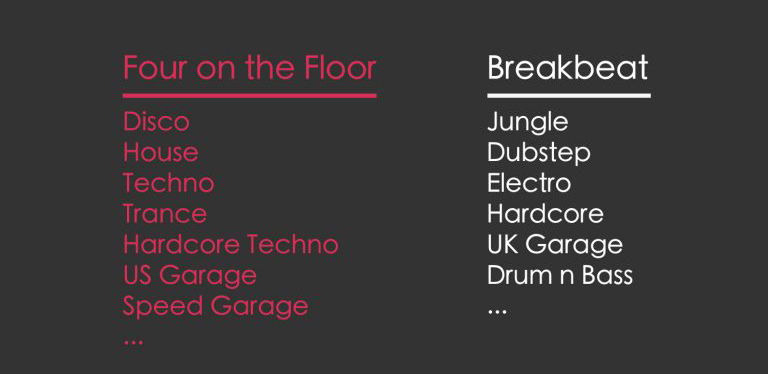
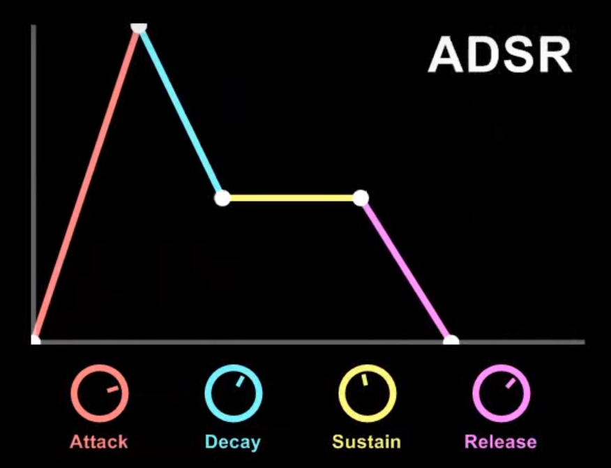
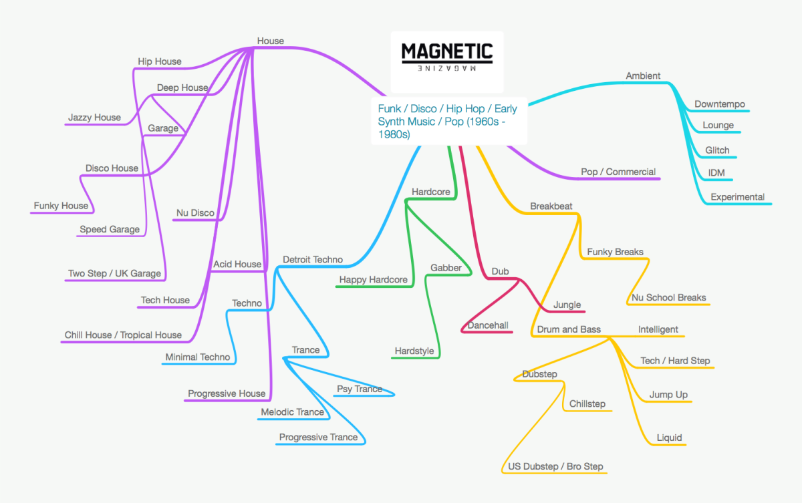
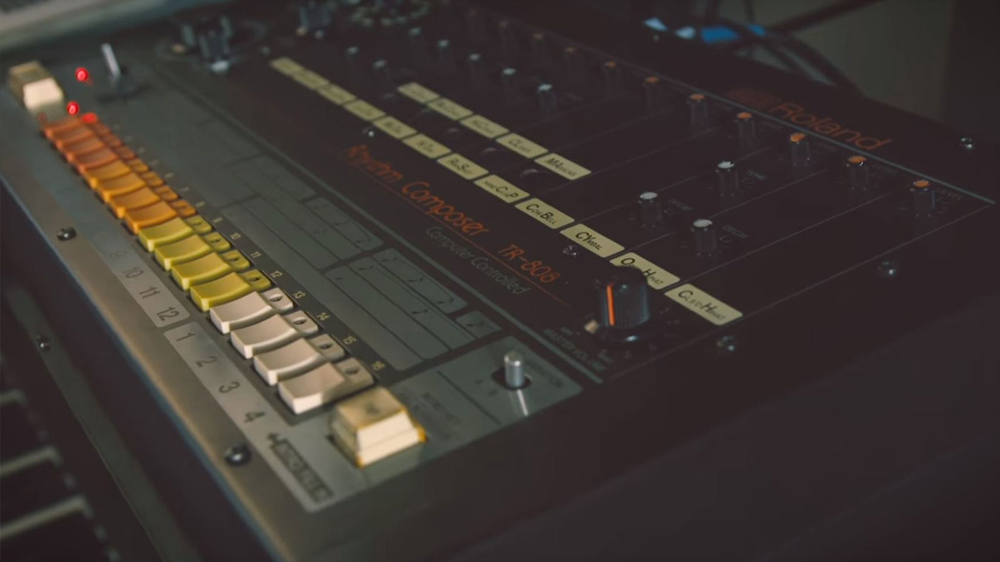

入门？来了解一下
电音，电子音乐。其实我本人接触电音还算得上挺早，因为在初中玩电子游戏的缘故在初中就开始中毒了电子音乐。印象中那时候对电音的最多接触就是玩极品飞车（NFS系列）以及狂野飙车时，听着随机循环的游戏自带音乐，通关各种赛道任务。至今还记得当初在屏幕上的赛道上竞速时，切歌到Ghosts ‘n’ Stuff —— Deadmau5时肾上腺素的飙升感。
然而遗憾的是，除了满足于简单的听觉享受之外，我也并没有深入的了解一下电音的深度知识内容，以至于当别人问我喜欢的风格类别是House还是Trance时，我都只能含糊其辞。
后来也是自己泛泛的了解一些电音小知识和科普性内容，加之GFW内搜不到一章很好的关于电音科普文，感叹国内电音小众化之余，决定整理出这篇不完全入门指南
有关电音的一些东西
电子音乐（Electronic Music）往往简称为『电音』，广义来讲，只要是通过电子乐器或者电脑合成制作出来的音乐作品都属于电子音乐范畴。但具体来说，电子音乐又有着它独立的分类体系和标准。所以对于各类电子音乐，一概而论是一种完全不准确的方式。
EDM？Oh EDM
通常电音会被认为代表的就是电子舞曲（Electronic Dance Music），也就是国外所称的EDM。然而这里面有个小小的误会，电子音乐并不仅限于EDM.
对于早期的电子音乐，其发展形式以EDM为主，说到EDM当然离不开三个内容 —— Electronic（电子）、Dance（跳舞）和 Music（音乐）,这三个内容也是早期电子音乐形式的主要核心，诸如早期的House、Techno、Disco等电子音乐。实际上在上世纪90年代，尚未出现EDM这种说法的时候，国外主流媒体更愿意用“Electronica”来代指这种电子音乐，直到2008年以后，成名DJ的兴起使得EDM成为更广泛的电子舞曲代名词。
当然随着电子音乐的发展和衍变，EDM的发展也有了很多分类 —— Trance，Trap，Dubstep等（现在来说应该加上“流行”两字更为准确），正因为发展方向太过多元，很多分类下的细分类已经不能被算在EDM中了,因为很多电子音乐已经属于Non-dance范畴内的了。
Mix, Remix, xxx Mix
你可能听过一两首电音，然后觉得“哇哦还不错哦”然后就去某网络音乐播放器上搜这首电音，然后搜到的结果很可能会有很多曲名后跟着Mix、Remix、xxx mix这样的标识，然后心里面想这是个什么鬼。
Mix，为Audio Mixing的简写，也就是“混音”，就是把不同来源的音轨整合为一个音轨，从而制作成一首连贯的音乐歌曲。另外Original Mix意思为作品初版的意思。而Remixd则标示，该音乐歌曲是拿别人的作品，经过个人风格化加工而制作完成,通常是在保留基本旋律的基础上，对音色节奏拍子等进行种种改编，所以曲风甚至和原曲大相径庭。
另外还有radio mix——去掉首尾loop（大大缩短首尾的循环部分）的版本，以及extended mix——加长loop或者混音部分的版本。Continuous mix一般是类似串烧形式的音乐拼接，尤其是在派对或者show上会用来制造气氛，甚至包括一些临时创作、即兴发挥的成分。当然还有一些对原作改换风格进行remix创作，比如dub mix、progressive mix等等。
4/4 OR Breakbeat?
Four on the Floor，也就是4/4拍，表示以四分音符为一拍，一个小节有四拍，比如最熟悉的类型“动次打次……”就属于典型4/4拍。同样还有慢拍如2/4拍，表示以四分音符为一拍，一小节有两拍。
Breakbeats碎拍，其实也没有真的碎得那么碎，不过是每一小节的拍子并不那么固定，中间的clap会在不同的地方出现，从而造成一种错乱感。实际上像Drum & Bass（鼓打贝斯）这类风格化的音乐，鼓点听起来还蛮有节奏感。
而整体电音也可以按4/4 OR Breakbeat进行粗略的大致分类。

BPM & ADSR & ……
BPM，全称Beats per Minute，就是一分钟多少拍子，代表音乐节拍速度，数值越大也就意味着音乐节奏越快。比如120BPM，对于4/4拍的音乐，就表示一分钟内有1234 1234 1234……共30个周期，120拍。
ADSR一般在电音制作中较为常用，它是四个单词的首字母缩写——分別是Attack, Decay, Sustain, Release，具体的表示如下图……这里就不做详细说明了。

还有一些可能在玩电音或者听电音时遇到的各类名词术语，就自行搜索吧，因为很多我也没那么明白，万一讲错了岂不会很尴尬。
不得不说的电音风格
OK，从上世纪80-90年代电子音乐诞生，到现如今经过20多年的发展演变，电子音乐风格从单一的室内派对舞曲衍生出种种流行风格，也早已不是被人误解的仅仅是摇摆和动次打次。

一首电音的风格归类要参考音乐的多个特征，本指南里我尽可能来选出具有代表性的风格分类简单介绍一下。
House
House，又被称为浩室音乐。可以这么来理解——这类风格的电音乐曲最早是在舞厅和室内播放，因而被称为House Music（误），实际上house music也是从disco也就是迪斯科舞曲发展而来的。House的节奏大多数是典型的4/4拍，就像“动次打次”这样。如果一首电音开头就是突出的鼓点节奏（或者渐入鼓点节奏），那会有很大可能会是一首House Music。
Deep House，具有代表性的慢速电音，2、4拍略重，一般节拍速度在120bpm左右。这类风格电音，把电音的激情放在较为舒缓又不失轻快的旋律中。Deep House风格适合在午后或者午夜，一个人来听，推荐两首我个人比较喜欢的deep house音乐：
🎧 Creep —— Gamper & Dadoni / Ember Island
🎧 Hear Me Now —— Alok / Bruno Martini / Zeeba
Progressive House，最早兴起于欧洲的一种电音风格，有着渐进特点结构——整个音乐旋律渐进变化,由部分旋律的循环渐进为完整的旋律，或者是旋律从第一阶段渐进为第二阶段发生旋律变化。同样鼓点也会渐进变化，从没有鼓点到“动_打_”再到“动次打次”这样，甚至可以将其看作一种trance music。Progressive House风格音乐独特的气氛渲染力使这类音乐趋于流行化，并在公共场合例如商场被广泛盗用使用,同样推荐三首我个人比较喜欢的：
🎧 City of Dreams —— Dirty South / Alesso / Ruben Haze
Electro House，或称之为电气浩室，节拍速度在125-135bpm之间，其风格特点在于是在每一个拍点都有显著的Drum & Bass，鼓打贝斯。Electro House风格的形成在很大程度上受到Electro（电子）、Electroclash（电子撞击）、POP（流行音乐）的影响，比如本文开头提到Ghosts ‘n’ Stuff——Deadmau5。个人觉得这种风格的音乐比较适合自嗨和电子游戏BGM，再推荐两首我比较喜欢的：
Future House，起初（2010年中期）起源于英国派的deep house风格，特点是在类似deep house那种慢速电音中，又有着金属电子，金属碰撞以及低音贝斯的声音。Future House风格的音乐在各种场合都不会带来很多违和感，而且很容易吸引捕捉人们的听力，最具代表性的一首就是哪怕你不了解电音也会知道的Alan Walker代表作——Fade，很多新生电音爱好者也是因为这首音乐开始入坑电音，并慢慢中毒。另外推荐两首我比较喜欢的：
🎧 Future Is Now —— Madison Mars
🎧 Safe & Sound —— Different Heaven
除了上述几类我个人比较熟悉也比较喜欢的House风格电音，庞大的House风格还有诸如Acid House、Tropical House、Hip House等等风格类型，在此就不一一赘述了。对House风格感兴趣的话，更多的了解推荐参考来自知乎的一篇。
Trance
Trance一词，直译过来的话被译为恍惚、出神，而对于Trance风格的电音，一般称之为“迷幻舞曲”。Trance电音曲风形成之时也确实源于欧洲夜店尝试用音乐来模拟这样的状态。
产生于1990年代早期的Trance可以说是Techno和House一种分支，不过更偏向于旋律化，尤其是很长很长很长的Breakdown（联奏）中塞满复杂重复的优美旋律和及具特点的中音高潮，节拍速度在110-150bpm之间（大多数在125-145bpm）。随后的发展中Trance也相当地吸收了techno、house、pop、chill-out（甚至还有classical-古典音乐）等一些曲风的风格特点，形成了各类Trance曲风分支。
Psychedelic Trance或简称为Psy Trance，迷幻出神，利用合成器节奏构成的催眠式架构与复杂层次旋律的重复段落，节拍速度较快，在140-150bpm之间，95年左右非常流行（说实话现在还喜欢Psy Tranc的电音爱好者真的很硬核）。了解不多个人不做推荐。
Progressive Trance或简称Prog Trance，渐进出神，有着类似house的风格（比如鼓点），在旋律上突出渐进式变化，节拍速度在125-135bpm之间，Prog Trance曲风更加突出trance的中音优美，适合用作视频BGM，推荐两首个人比较喜欢的：
🎧 Vice Versa - ATB / Armin van Buuren
Hard Trance，硬派出神，特点在明显强劲坚硬的鼓击、共振的bass。回响集中在鼓点上，并且旋律较快，节拍在135-150bmp之间。接触较少不做推荐。
除了上述Trance派别，和House一样Trance还有很多派别比如Acid Trance、Tech Trance和Uplifting Trance，不做过多介绍。如果你喜欢Trance的话非常向你推荐NWYR(W&W)和Armin van Buuren，Armin对电子音乐的发展也是做出了极大贡献，并且创立了属于自己的厂牌Armada Music，独家放送A State Of Trance深受Trance爱好者喜爱。
Electro
回忆一下上个世纪超级马里奥的背景音乐，电脑合成的电子声音组成了一串有趣的BGM。大量合成音的运用可以说是Electro音乐的最大特点。
20世纪70年代，disco音乐逐渐衰落，音乐制作人们开始尝试新的音乐风格和音乐制作方式。80年代，Roland公司推出了一款名为TR-808 Rhythm Composer（下图）的电子音乐设备，与传统的电子音乐设备不同，808直接采用了模拟合成的方式发声，而非事先录入声音样本的模式。然而在电子音乐尚未流行时，808因其不切实际的声音模拟受到音乐制作人的批评，并且成为了商业上的失败品。但也因此大量808转入二手市场，并且因为其价格低廉、上手简单、可编程节奏以及极具风格的音色，受到了地下音乐制作者的青睐。紧接着808开始在音乐节发挥了它极具影响力的作用，而模拟合成的发声方式，逐渐被音乐制作人们接受，并且在日后的嘻哈、流行和电子音乐中开始占据一定地位。

Electro风格的电音可以说将模拟合成音运用到了一种非常偏执的地步，从旋律到鼓点，从主调到伴奏。不同于House和Trance这种4/4规律节拍的曲子，Electro属于典型的BreakBeat（碎拍）曲风，整体鼓点变化和旋律变化非常明显。
毫不掩盖地说，我本人十分喜欢打电动玩电子游戏，所以对于Electro类电音的喜爱程度要远高于其他类别。当然，ELecrto必然适合在打电子游戏前调动一下气氛，也非常适合跑步运动时听，推荐几首我个人比较喜欢的：
🎧 Checkpoint —— Nitro Fun/Hyper Potions
🎧 Disconnected —— Pegboard Nerds
猫厂Monstercat黄色封面均为Electro风格电音，可以说是集合了大量精品electro，喜欢electro的话个人非常推荐去听听看！
Trap
Trap！陷阱！从街头嘻哈风格发展而来的Trap很好地继承了Hip-hop的“不良品质”——侵略性的旋律声音（以及歌词），描绘着美国南部街头风格的暴力和苛刻体验。Trap一词代表街头文化中的“死巷”，也是进行非法交易和暴力活动的小场所。特点为大量的踢鼓、808模拟低音鼓声以及充满层次的合成器声音，接拍速度在140BPM左右（但变化范围很大，从110-170BPM都有覆盖）。个人推荐几首，感受入侵：
🎧 Be Free - Aero Chord / Klaypex
另外特别推荐江南皮革厂老板黄鹤专属个人EDM Trap单曲——王八蛋：
D&B
Drum and Bass，贝斯鼓打。
2019.07.30 未完待续 后续D&B Dubstep